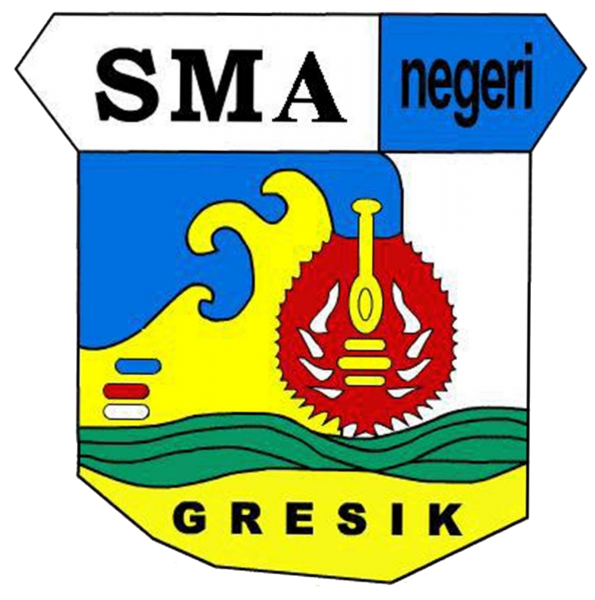

Background
Education
Formal education and academic achievement underpinning the technical and professional work below.
D4
August 2021 s.d. September 2025
Bachelor of Applied Engineering, Mechatronics Engineering Technology (S.Tr.T.)
Politeknik Manufaktur Bandung (Polman Bandung), Bandung, West Java
GPA 3.28 / 4.00 · Predicate "Sangat Memuaskan" · Accreditation BAN-PT "Baik Sekali" (Excellent).
- Thesis: Underwater object detection sonar system using six piezoelectric transducers controlled via Arduino Uno, with an integrated Python real-time visualization UI. View project detail →
- Relevant coursework: Control Engineering, Industrial Automation I & II, Electro-Pneumatics, Sensors & Actuators, Microcontroller & Interfacing, Mechatronic Systems, Power Electronics, System Modeling, Intelligent Control, Instrumentation & Measurement, Digital Systems & Microprocessors, Mechatronic Product Development, Technical Drawing/CAD.
Electro-pneumatics, PLC automation, panel wiring and instrumentation, explained with photos and videos.
SHS
July 2018 s.d. May 2021
Senior High School, Science & Mathematics

SMAN 1 Gresik, Gresik, East Java
GPA 87.98 / 100.
Academic Record
Nilai Kelakuan Kumulatif (NKK): 29 · Indeks Prestasi Kumulatif (IPK): 3.28 · Yudisium: Sangat Memuaskan